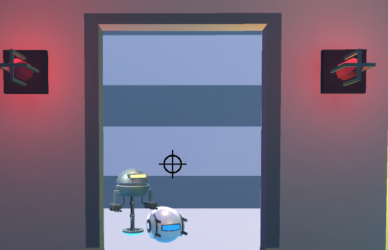

Unity Survival Game

Github Link To Project

Towards the end of my first year I was given an assignment to develop a solo project in Unity, the project had to feature a survival aspect so I tackled it by creating evil killer robot drones that chase after the player at a massively increasing rate. The robots spawn more frequently the longer the player takes to find all of the access points required to get into the end teleportation room to escape. I accomplished this by setting some invisible spawn points that are stored in a prefab array, each tick a random spawn point is selected and a drone is spawned with player tracking movement - it then navigates the terrain through a navmesh to chase after the player.. killing them on contact.